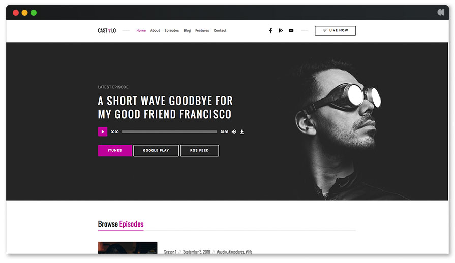

Hey, My name is Rozaline (pronounced: Rose-ah-LEEN), I have had the incredible opportunity to stay immersed with technology for 14+ years in one way or another, recently started programming and already addicted to a sense of accomplishment from debugging/increasing optimization.
I only know how to throw myself into things at 140%. I am like this with companies, with industries, with partners, and games. I absolutely refuse to water myself, nor my drink, down for anyone, and if they can't handle it then they usually do not end up sticking around for long. I try to live life in the moment through the lens of an opportunist that tries to have a conscience. I have refined tastes but still find myself at Taco Bell too much. The 3 bands I fill my ears with perpetually are Interpol, Muse, and Tool.
Evolving Skillset/Info:
I have intermediate experience at JavaScript, and beginner at HTML/CSS, C++ (Unity/Unreal 5 ) , and minor experience in Linux as well (raspberry pi fun times).
Highschool Diploma from Harrison School of the Arts, Tier 1 Sommelier with CMS.
Some of my hobbies include: PC gaming, cooking (preferably with wine), drinking tea, playing guitar, and soldering circuit boards.
My Facebook PageTestimonials from people I have had the privilege of affecting their life, "She consistently gets up and brushes the dirt of and charges back into the fray." -Daniel Bachelder. "You are the problem solver for everyone in your life." -Mahad Mousse.
Some of my favorite styles of wine/varietals.
I am currently working on a 2D game with Cyberpunk pixelart graphics,
the website for the podcast “In my Defense” (technologies: JavaScript,HTML, and CSS)
"In My Defense" is a podcast in which pasionate lovers of musicians/bands that have been deemed by societal norms to be "bad" or "trash" are given a chance to defend their artist's content and provide the logic and/or incite needed to peer through their lense breifly "Your opinion is wrong...and that is okay."
repl.it base code for website (placeholder) Github repo (placeholder) live link placeholder for "In My Defense" I was inspired (by Michel Reeves from youtube) to make a polite Roomba (linux, C++, HTML, CSS). with an infrared scanner that says “sorry for bumping into you” when it bumps into people or pets (or in reality any being with a temperature higher than room temperature). So a Raspberry pi will be velcroed to the underside of a roomba along with an arduino that is connected to an infrared scanner that detects A. if what the roomba hit was hotter or colder than current room Temp, and B if it was then to execute apology. Figure I would start with something relatively safe to start with robotics instead of going straight to the lawn mower Robot.
If I am hired for a remote location I can provide programming solutions that are geared towards simplicity in the spirit of future teamwork (someone else is probably going to look at/mess with this someday), website building, robotics coding is a deep passion of mine that I wish to pursue.
If I am hired for an office position, I can build/fix just about any computer/server you may require to save a quantum computer (I would be open to this, just have no experience). I am meticulous with cable management as well as obsessive about system temps. So you hire a coder and get a part time IT girl to boot, quite an asset if you ask me.
Please send any and all inquiries to Click Here To Email Me , holidays might adjust this time a bit but I will typically respond to most inquiries within 24 hours. Feel free to ask me about anything tech related from hardware to software. Github Profile
Linked in ProfileHere is where I am located in the heart of Atlanta.